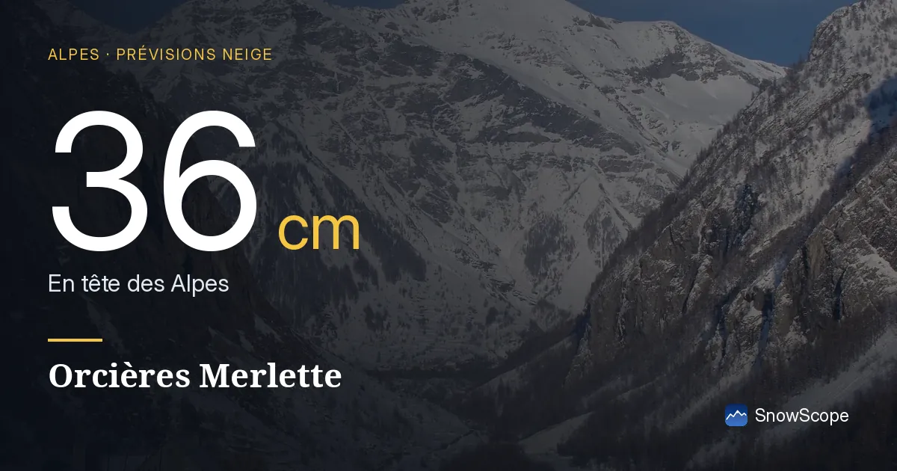

Orcières Merlette : 36 cm en tête des Alpes
Orcières Merlette mène les prévisions des Alpes avec 36 cm de neige nouvelle en trois jours, tandis que Les Deux Alpes (33 cm) et La Grave (32 cm) se classent aussi au premier rang. La neige se concentre les 9 et 10 novembre ; presque rien ne tombe le 8.
Consultez les prévisions neige en temps réel pour Orcières Merlette sur l'application SnowScopeHauteurs de neige, alertes poudreuse et carte 3D, gratuitement.
Les prévisions : qui mène ?
Trois stations dominent les prévisions. Orcières Merlette se place première avec 36 cm entre le 8 et le 10 novembre. Les Deux Alpes suit avec 33 cm, et La Grave, en altitude, revendique 32 cm—bien qu'elle possède déjà 50 cm au sommet et gagnera un tiers de plus. Puy-Saint-Vincent (30 cm) et Chaillol (29 cm) complètent le top cinq. Les prévisions proviennent d'un passage de modèle du 6 novembre et couvrent la fenêtre de trois jours.
Aujourd'hui, la région compte seulement 661 de ses 1 178 stations enneigées—en baisse par rapport aux 795 d'il y a deux jours—ce système arrivant est donc important. D'ici le 10 novembre, nous attendons que la couverture remonte à environ 695 stations avec neige.
| Station | Hauteur de neige | Neige fraîche, 72 h | Attendu, jours suivants | Sommet |
|---|---|---|---|---|
| Orcières Merlette | 13 cm | 16 cm | 36 cm | 2 731 m |
| Les Deux Alpes | 46 cm | 15 cm | 33 cm | 3 511 m |
| La Grave | 50 cm | 20 cm | 32 cm | 3 543 m |
| Puy-Saint-Vincent | 7 cm | 14 cm | 30 cm | 2 664 m |
| Chaillol | 5 cm | 15 cm | 29 cm | 1 929 m |

Quand : le timing compte
Le 8 novembre est sec sur toutes les stations—pas de neige prévue. Le système stagne ou prend son temps. Le 9 novembre apporte alors 13 à 17 cm, selon la station. Le 10 novembre est le jour majeur : 16 à 20 cm.
À Orcières Merlette, les chiffres par jour sont 0, 17 et 19 cm. À La Grave, c'est plus serré (0, 13, 19 cm), mais La Grave part d'une base profonde et gagne moins proportionnellement. Puy-Saint-Vincent, plus bas et plus sec, reçoit 0, 14 et 16 cm—c'est-à-dire que la majorité de la neige nouvelle tombe tard dans la période, et les basses altitudes peuvent connaître de la soupe dès l'après-midi.

L'altitude, c'est le destin
Le modèle montre une forte dépendance à l'altitude, excepté aux stations les plus hautes. À Orcières Merlette, le sommet (2 731 m) gagnera 37 cm sur les sept prochains jours, la mi-pente (2 278 m) seulement 28 cm, et la base (1 826 m) rien. Les Deux Alpes reflète cela : sommet (3 511 m) reçoit 29 cm de neige nouvelle, mi-pente (2 397 m) seulement 18 cm, base (1 284 m) rien.
Mais La Grave, débutant à 3 196 m, est tellement haut qu'il reçoit 34 à 35 cm à chaque niveau—base, mi-pente, et sommet. L'altitude élevée est le grand égaliseur ; presque toutes les précipitations tombent sous forme de neige.
Le piège du zéro thermique
Le zéro thermique—où la pluie devient neige—nous dit où la soupe se forme. Le 7 novembre, il plane aux alentours de 2 160 à 2 290 m à Orcières Merlette ; d'ici le 10 novembre, il monte à 2 900 à 3 160 m. Cette hausse est cruciale.
Le 10, la base d'Orcières Merlette à 1 826 m se situe bien au-dessous du zéro thermique, donc les précipitations qui arrivent là seront de la pluie ou de la neige mouillée se transformant rapidement en soupe. À La Grave, le zéro thermique reste entre 2 700 et 3 210 m sur toute la période—sa base à 3 196 m plane près de cette limite, donc certains jours c'est de la neige, certains jours de la pluie. Les stations plus basses comme Puy-Saint-Vincent verront le zéro thermique bien au-dessus de leur base le 10 novembre, donc presque toutes les précipitations tombent en pluie ou neige mouillée.
Ce que le modèle voit et rate
Les prévisions ont été lancées le 6 novembre et couvrent le 8 au 10 novembre. La neige en début de saison est mince : Orcières Merlette n'a que 13 cm au sommet actuellement, donc les rochers et la terre peuvent être sous les 36 cm nouveaux. Le satellite a vu de la neige le 1er novembre à Orcières et La Grave ; Puy-Saint-Vincent n'en avait pas, et peut ne pas accumuler assez pour tenir.
Le 10 novembre apporte de l'air chaud et de la neige mouillée qui peut ne pas se stabiliser la nuit. Nous modélisons une zone, pas un point unique, donc les effets locaux du terrain peuvent décaler la limite entre pluie et neige. Consultez le bulletin d'avalanche officiel de Météo-France BERA si vous vous aventurez hors-piste.
Ce que les skieurs doivent faire maintenant
Si vous y allez, visez l'après-midi du 9 novembre ou la matinée du 10 novembre pour attraper les traces fraîches. Les hautes pentes à 2 500 m et plus seront plus sûres à skier ; le bas terrain sera de la soupe dès l'après-midi du 10 novembre, surtout si le zéro thermique monte comme prévu.
La Grave et les hauts cols offriront le meilleur ski ; presque toutes les précipitations y tombent en neige même les jours les plus chauds de la fenêtre de prévisions. Début de saison rime avec changements rapides : un passage de prévisions d'aujourd'hui peut différer dans la mise à jour de demain. Le modèle est notre meilleur guide, pas une garantie. Surveillez attentivement la météo locale.
Conseils aux skieurs
- Les hautes pentes (2 500 m+) gagneront le plus—37 cm au sommet d'Orcières Merlette contre 28 cm en mi-pente, donc privilégiez le haut terrain.
- Ciblez l'après-midi du 9 novembre ou la matinée du 10 novembre avant la consolidation ; le 8 novembre est sec, inutile pour les pistes fraîches.
- Surveillez le zéro thermique : le 10 novembre, il dépasse 2 900 m à Orcières Merlette, donc les bas versants se transformeront en soupe—skier tôt dans la journée.
- La Grave et les hauts cols offriront le meilleur ski ; presque toutes les précipitations y tombent en neige même les jours les plus chauds de la fenêtre de prévisions.
- Avant une sortie hors-piste, consultez le dernier bulletin d'avalanche de Météo-France BERA ; à 13 cm de base, la neige de début de saison est imprévisible.
À propos de ces chiffres
Les hauteurs de neige des stations sont la neige la plus épaisse sur le haut du domaine, d'après le modèle de neige SnowScope (environ 1 km, calcul du 6 novembre) ; ce sont des estimations pour une zone, pas une mesure en un point. Les valeurs des stations de mesure sont mesurées à la date indiquée. Les prévisions peuvent changer. Consultez toujours le bulletin d'avalanche officiel avant le hors-piste.
Bulletins d'avalanche officiels: Météo-France BERA
Citer ce bulletin
Pour la recherche, l'enseignement ou la presse : chiffres et graphiques réutilisables librement sous CC BY 4.0 avec cette citation.
SnowScope (2026), Orcières Merlette : 36 cm en tête des Alpes, https://snowscope.app/blog/fr/2026/11/alps-snow-forecast-7-november-2026.html, consulté le 2026-11-07
SnowScope (Atlas Labs). (2026, November 7). Orcières Merlette : 36 cm en tête des Alpes. SnowScope snow reports. https://snowscope.app/blog/fr/2026/11/alps-snow-forecast-7-november-2026.html
BibTeX
@misc{snowscope2026alpssnowforecast7novembe,
author = {{SnowScope (Atlas Labs)}},
title = {Orcières Merlette : 36 cm en tête des Alpes},
year = {2026},
month = nov,
howpublished = {\url{https://snowscope.app/blog/fr/2026/11/alps-snow-forecast-7-november-2026.html}},
note = {Published 2026-11-07 13:36 UTC; accessed 2026-11-07}
}· CC BY 4.0 · Méthodes, données et outils →
Orcières Merlette : neige et température selon l'altitude, cet hiver vs l'hiver dernier (outils) →
Suivre Orcières Merlette
Gratuit : un message quand la neige arrive, et la météo chaque matin.
Autres bulletins neige

Les 2 Alpes culmine à 3 511 m pour de la neige abondante en décembre 2026, avec un forfait adulte 6 jours à 266,50 EUR.

Nous classons les stations de ski françaises selon les probabilités de neige en décembre et le prix des forfaits, à partir de 36,00 EUR pour un forfait journée adulte aux Karellis.

Le 4 novembre, Les Deux Alpes compte 45 centimètres au sommet mais zéro en bas — un écart d'altitude extrême en début de saison.